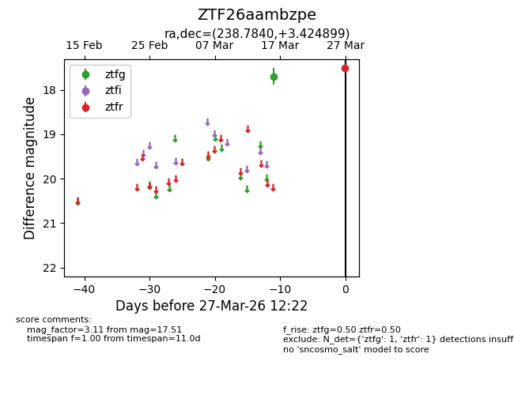
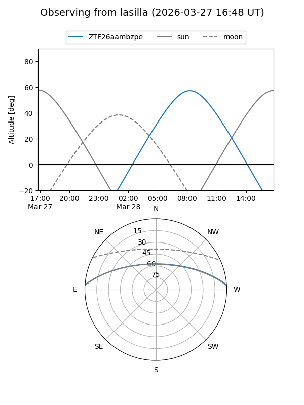
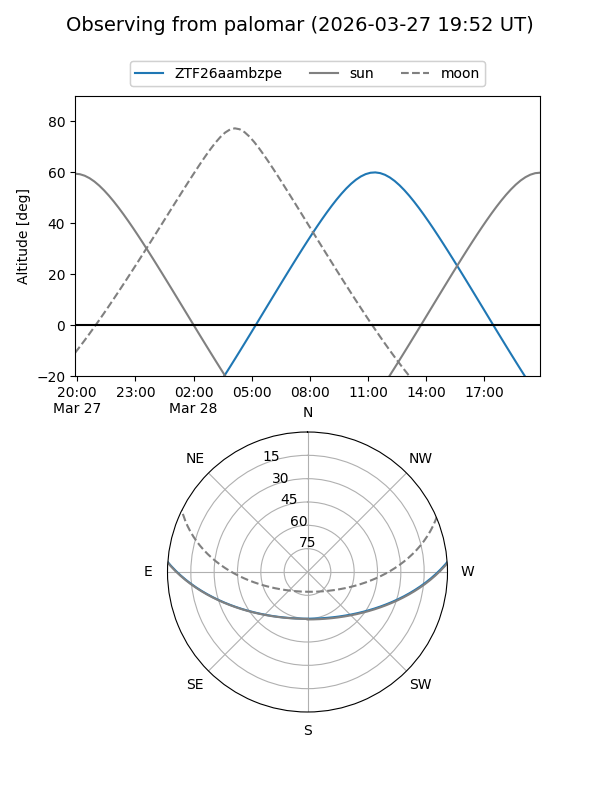

ZTF26aambzpe
Target ZTF26aambzpe at 2026-03-27 12:26
Aliases and brokers:
FINK: link
Lasair: link
ALeRCE: link
alt names
ZTF26aambzpe (ztf,fink_ztf)
Coordinates:
equatorial (ra, dec) = 238.7840,+3.42490
equatorial (HMS+DMS) = 15:55:08.16,+03:25:29.64
galactic (l, b) = (12.7605,+40.18184)
Flags:
Photometry:
last ztfg=17.70, ztfr=17.51
1 ztfg, 1 ztfr detections
Lightcurve

Visibility


Additional plots